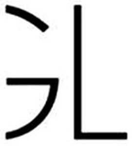

Trade Mark Journal No.2025/046 14 November 2025
WO0000001882986 (14,18,25)
Office of origin: European Union Intellectual Property Office (EUIPO)
Date of International Registration:19 September 2025
Date of designation in the UK:
19 September 2025

International priority date claimed: 29 May 2025
(European Union Intellectual Property Office (EUIPO))
(019195444)
- Class 14
- Jewellery made of semi-precious materials; necklaces [jewellery]; rings [jewellery]; bracelets [jewellery]; bracelets made of embroidered textile [jewellery]; chains [jewellery]; clasps for jewellery; jewellery charms; charms for key rings; earrings; key rings [split rings with trinket or decorative fob]; jewellery boxes; tie pins; jewellery hat pins; decorative brooches [jewellery]; key rings; cuff links; watches; watch chains; dress watches; key rings [trinkets or fobs] of precious metal; jewelry chains of precious metal for bracelets; charms for bracelets; ear clips; hoop earrings; pins [jewellery]; jewelry for children; silver jewellery; plastic jewellery; jewellery made of precious metals; charms for necklaces; jewelry caskets; cases adapted to contain items of jewelry; hat jewellery; lanyards for keys; key rings of leather; key fobs of imitation leather; jewelry boxes of leather; watch bands; shoe jewellery; jewellery; tie clips; watch pouches; timepieces; watch fobs; watch clasps; ornamental pins; ornamental lapel pins; gold jewellery; jewelry, precious stones; pendants [jewellery]; costume jewelry.
- Class 18
- Key cases; walking sticks; vanity cases, not fitted; trunks [luggage]; beach bags; bags for sports; chain mesh purses; purses; handbags; briefcases; school bags; umbrellas; business card cases; credit card cases [wallets]; pocket wallets; haversacks; attaché cases; garment bags for travel; rucksacks; leather bags and wallets; leather shopping bags; clothing for pets; children's shoulder bags; shoulder bags; suitcases; overnight suitcases; bags; belt bags; luggage; clutch bags.
- Class 25
- Embroidered clothing; knitwear [clothing]; waterproof clothing; clothing of imitations of leather; clothing of leather; dresses; clothing; braces [suspenders] for clothing; footwear; socks; shirts; hats; coats; neckties; jackets [clothing]; trousers; slippers; pelisses; sandals; shoes; scarves; overcoats; boots; leather jackets; maillots [hosiery]; blazers; suits; pocket squares; gloves [clothing]; headbands [clothing]; money belts [clothing]; belts [clothing]; bandanas [neckerchiefs]; tee-shirts; polo shirts; berets; cardigans; sweatshirts; cashmere clothing; woollen clothing; sweaters; sneakers; weatherproof clothing; clothing for sports; bath robes; underwear; nightgowns; stockings; leotards; boots for sports; bathing trunks; galoshes; tank tops; headwear; hoods [clothing]; ascots; bathing caps; shower caps; dress suits; collars [clothing]; bathing suits; jerseys [clothing]; heavy jackets; stuff jackets [clothing]; denim clothing; denim pants; sleep masks; trousers of leather; parkas; pyjamas; cuffs; salopettes; neck tube scarves; shawls; outerclothing; tailleurs; waterproof jackets; dressing gowns; visors being headwear; visor caps; casual wear; tracksuits; ankle socks; waistbands [parts of clothing]; beach clothes; waistcoats; turtleneck sweaters; printed tee-shirts; bikinis; bodies [clothing]; camisettes; tights; cloche hats; bustiers; sundresses; shoulder wraps [clothing]; fittings of metal for footwear; skirts; gloves made of skin, hide or fur; leggings [trousers]; miniskirts; furs [clothing]; pareus; ear muffs [clothing]; ponchos; leggings [leg warmers]; footmuffs, not electrically heated; chemises; half-boots; stoles; twinsets; evening dresses; flip-flops [footwear]; clothing for men; bathing suits for men; short trousers; caps with visors.
BINBIN JIA
Representative: PRAXI INTELLECTUAL PROPERTY S.P.A., Via Leonida Bissolati, 20, I-00187 Roma, ITALY